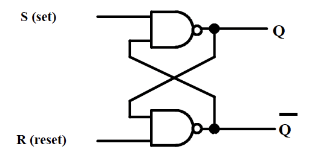
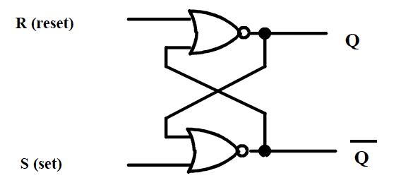
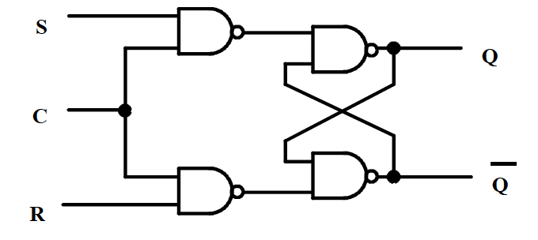
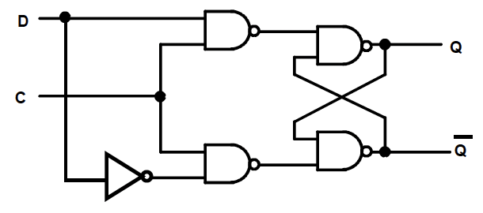
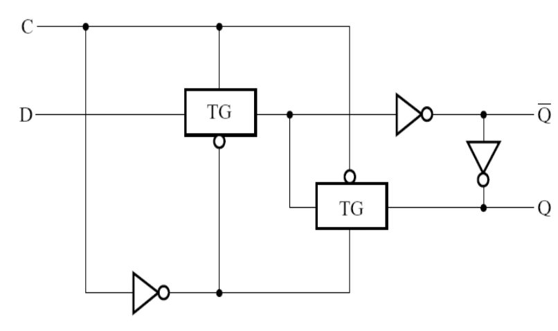
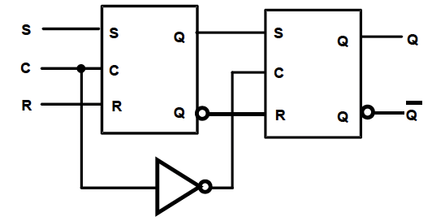
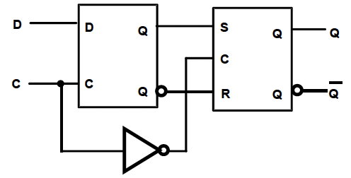
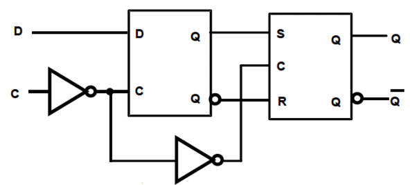
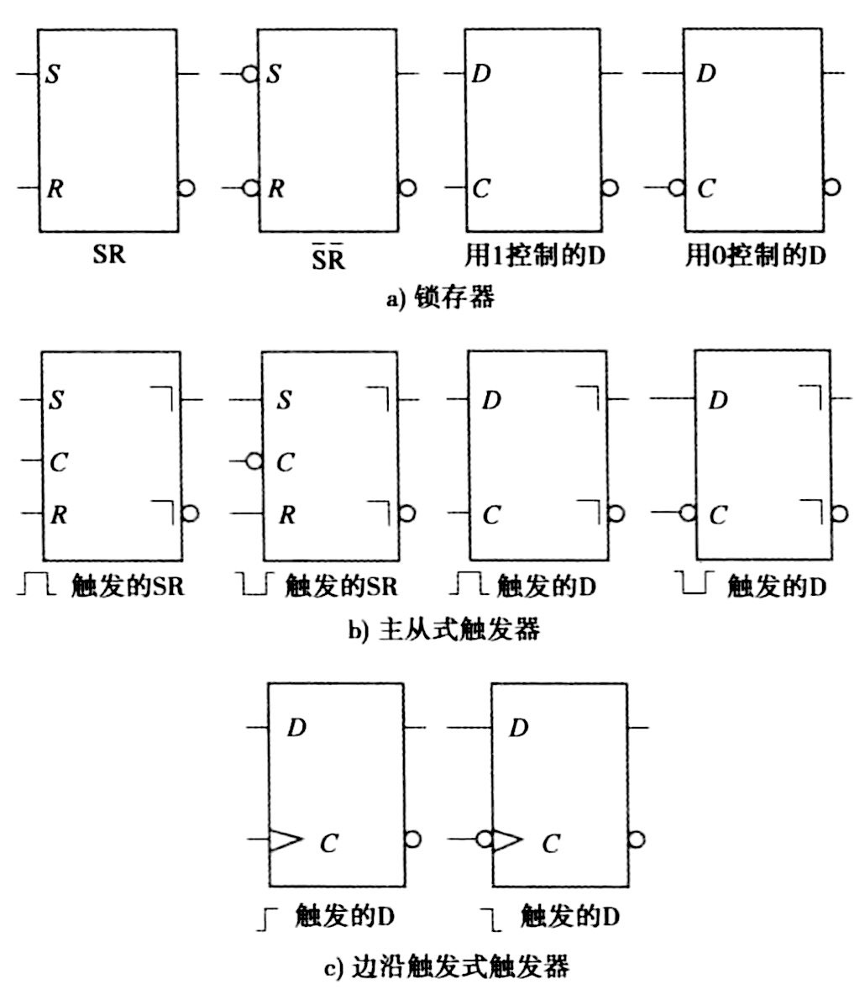

时序逻辑电路
时序电路¶
- 组成部分
- 储存元件：锁存器/触发器
- 组合逻辑：
- 输入：来自外部
- 输出：输出到外部
- Mealy型：取决于输入和当前状态
- Moore型：仅取决于当前状态
- 当前状态：来自储存元件
- 状态输出：下一个状态（取决于当前状态和输入），作为储存元件的输入
- 时序电路类型
- 取决于存储元件观察输入信号的时刻，以及存储元件状态改变的时机
- 同步电路：仅在时序信号（时钟脉冲）的触发下观察输入并改变状态
- 异步电路：由任意时刻的输入状态及输入变化的连续时间顺序决定
状态存储元件¶
输入信号的含义
- \(S\)：表示set输出\(Q\)为1
- \(R\)：表示reset输出\(Q\)为0
锁存器¶
-
组成：两个与非门

-
真值表：
\(R\) \(S\) \(Q\) \(\bar{Q}\) 0 0 禁止 禁止 1 0 1 0 0 1 0 1 1 1 保持不变 保持不变
注意
- \(S=0,R=0\) 不允许作为输入！
- 当上一个输入为 \(S=0,R=0\) 时，之后输入 \(S=1,R=1\)，信号不稳定
-
组成：两个或非门

-
真值表：
\(R\) \(S\) \(Q\) \(\bar{Q}\) 0 0 保持不变 保持不变 1 0 0 1 0 1 1 0 1 1 禁止 禁止
注意
- \(S=1,R=1\) 不允许作为输入！
- 当上一个输入为 \(S=1,R=1\) 时，之后输入 \(S=0,R=0\)，信号不稳定
- 设计思路：在(NAND) \(\bar{S}-\bar{R}\) 锁存器的基础上加一个控制信号
-
组成：两个与非门+一个(NAND) \(\bar{S}-\bar{R}\) 锁存器

-
行为
- \(C\) 相当于控制信号或者信号
- 当 \(C=1\) 时，与(NAND) \(\bar{S}-\bar{R}\) 锁存器功能相同
- 当 \(C=0\) 时，输出状态保持不变
- 设计思路：改进时钟 \(S-R\) 锁存器
- 合并两种输出保持不变的情况
- 利用信号变化时，两个输入 \(S\) 和 \(R\) 永远反相
- 避免输入信号都为1的情况
-
组成：一个非门+一个时钟 \(\bar{S}-\bar{R}\) 锁存器

-
真值表
\(C\) \(D\) \(Q\) \(\bar{Q}\) 0 X 保持不变 保持不变 1 0 0 1 1 1 1 0
由传输门组成的D锁存器

触发器¶
\(S-R\) Master-Slave Flip-Flop
-
组成：两个时钟 \(S-R\) 锁存器，和一个非门

- 主锁存器：接受外部输入信号
- 从锁存器：输出最终结果
-
工作过程
- \(C=1\)：主锁存器接受外部输入；从锁存器锁定
- \(C=0\)：主锁存器锁定；从锁存器输出主锁存器的状态
- 缺点
- 可能发生
1s catching问题- 当 \(C=1\) 期间，若输入信号发生跳变，主锁存器会错误地"捕获"这些中间变化，导致从锁存器最终输出非预期状态
- 改进方法：使用边沿触发
- 可能发生
Edge-Triggered D Flip-Flop
- 组成：一个时钟 \(S-R\) 锁存器+一个 \(D\) 锁存器
-
负边沿触发器

- 当 \(C\) 信号由1变成0（负边沿）的时候，从锁存器开放，接受主锁存器输入，从而改变输出
-
正边沿触发器

- 满足 \(Q(t+1)=D(t)\)
状态存储元件的电路符号
